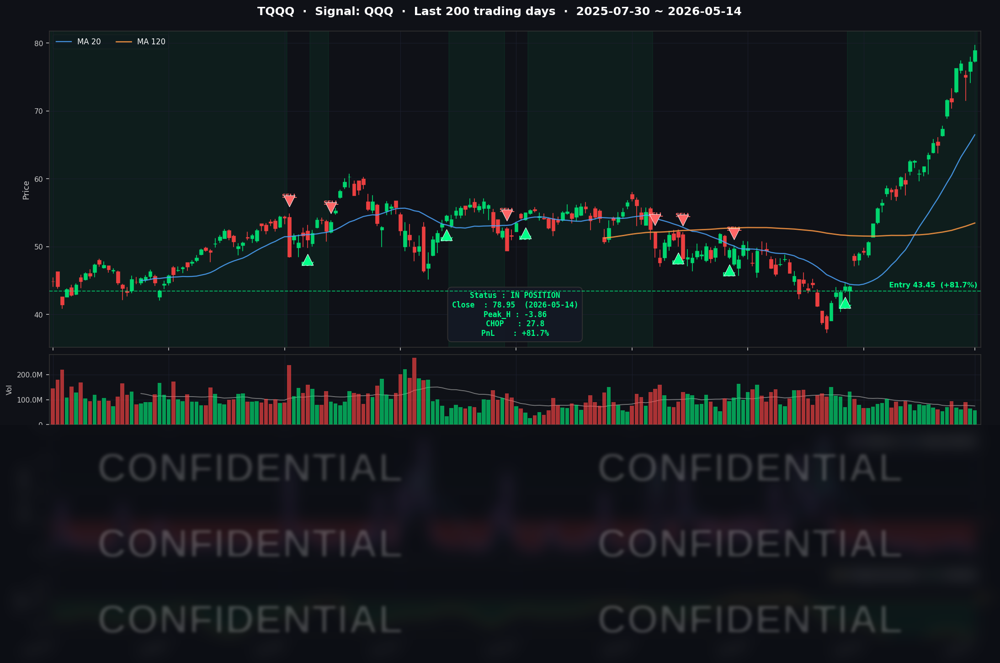

한 줄 요약: 나스닥과 S&P 500이 나란히 사상 최고치를 경신한 날, Ghost.AI는 TQQQ 매수 포지션을 강하게 유지하며 누적 수익률 +81.7% 달성. 파월 의장 퇴임과 NVDA 실적 발표가 다음 주 시장을 이끌 듯.
오늘의 매매 신호
| 항목 | 내용 |
|---|---|
| 오늘 할 일 | ✅ 아무것도 안 해도 됩니다 |
| 포지션 상태 | 📈 TQQQ 보유 중 (IN POSITION) |
| 매수 진입일 | 2026-04-07 (27거래일째) |
| 진입가 → 현재가 | $43.45 → $78.95 |
| 현재 포지션 수익 | +81.7% |
TQQQ 시그널 — IN POSITION
현재 TQQQ 매수 포지션을 보유 중입니다. 2026년 4월 6일 진입 이후 28거래일이 경과했으며, 누적 수익률은 +81.7%입니다. AI 모델이 현재 강한 상승 추세를 감지하고 있으며, 청산 임계점까지 충분한 여유가 확보된 상태입니다.

차트 읽는 법
이 차트는 세 가지 요소로 구성되어 있습니다.
위쪽 패널 (가격 차트): 초록과 빨강 막대(캔들)가 TQQQ의 일별 가격 움직임을 나타냅니다. 차트에 표시된 파란 세모(▲)는 AI 모델의 매수 신호, 빨간 세모(▼)는 매도·청산 신호가 발생한 시점입니다. 현재는 파란 세모 이후 포지션이 유지되고 있으며 아직 빨간 세모가 나오지 않았습니다. 이동평균선(곡선)은 가격의 전반적인 방향성을 보여줍니다.
아래쪽 패널 (모델 지표): 모델 내부의 방향성 강도를 시각화한 것입니다. 이 수치가 낮고 안정적일수록 "AI 모델이 상승 추세를 강하게 인식하고 있는 상태"입니다. 반대로 이 수치가 위로 올라와 특정 선(청산 임계점)을 넘으면 모델이 청산 신호를 발동합니다. 현재 수치는 임계점에서 충분히 멀리 떨어져 있습니다.
시그널이 말하는 것
오늘 나스닥이 사상 최고치를 경신하는 동안, AI 모델은 TQQQ에 대한 강한 매수 포지션을 유지했습니다.
모델이 지금 보여주는 것은 두 가지입니다.
첫째, AI 모델이 강한 상승 추세를 감지하고 있습니다. 시장이 뚜렷한 방향성을 보이는 구간에서, 모델의 방향성 신호는 전 커버리지 종목 중 가장 강한 수준을 유지하고 있습니다. 청산 임계점까지의 거리가 충분히 확보된 상태입니다.
둘째, 단기 청산 가능성은 낮습니다. 모델이 청산 신호를 발생시키려면 시장 방향성 지표가 현재보다 크게 변해야 합니다. 지금 그 거리는 충분합니다.
다음 주 워시 의장 취임 이후 시장 변동성이 확대될 경우, 모델의 방향성 지표가 청산 방향으로 이동하는지 모니터링할 것입니다. 만약 그 신호가 발생하면 즉시 알려드리겠습니다.
오늘 미국 마감 — 주요 이슈 서머리
지수 마감
| 지수 | 종가 | 등락 |
|---|---|---|
| S&P 500 | 7,501.24 | +0.77% (사상 최고치) |
| 나스닥 종합 | 26,635.22 | +0.88% (사상 최고치) |
| 다우존스 | 50,063.46 | +0.75% (+370pt) |
S&P 500과 나스닥이 나란히 사상 최고치(All-Time High)를 경신했습니다. 다우존스도 50,000선을 탈환하며 심리적 지지선을 회복했습니다.
국채 금리 & 연준
| 국채 만기 | 수익률 | 전일 대비 |
|---|---|---|
| 2년물 | 4.00% | 보합 |
| 10년물 | 4.46% | +2bp |
| 30년물 | 5.02% | +3bp |
10년물 금리 4.46%는 2025년 6월 이후 최고 수준입니다. 배경에는 이란 관련 유가 급등($107/배럴)이 유발한 인플레이션 재가속이 있습니다. 4월 CPI는 +3.8%(3년래 최고), PPI는 +6.0%(2022년 이후 최대)를 기록했습니다.
내일(5/15)부터 Fed 의장이 교체됩니다. Jerome Powell의 임기가 오늘로 끝나고, 트럼프 대통령이 지명한 Kevin Warsh가 취임합니다. 워시 신임 의장은 Fed 대차대조표를 공격적으로 줄이겠다는 방침으로 알려져 있어, 장기채 금리를 추가로 압박하는 요인입니다. 시장에 금리 경로를 사전에 알려주던 관행도 폐지할 것으로 예상되어, 앞으로 채권 시장의 변동성이 커질 수 있습니다.
오늘 AI 테마의 강세가 이 금리 역풍을 압도했지만, 역사적으로 신임 Fed 의장 취임 후 한 달간 S&P 500이 평균 5% 하락한 선례가 있습니다. 금융주(-1.07%)와 주택 관련주가 이미 금리 부담을 직접 받고 있다는 점도 염두에 둘 필요가 있습니다.
연준 위원 발언으로는 Bowman 부의장이 "인플레이션 2% 복귀 전까지 긴축 기조를 유지하겠다"는 매파적 입장을 재확인했습니다.
핵심 이슈
-
Cisco 실적 서프라이즈: Q3 FY2026 분기 매출 사상 최고치(약 158억 달러, +12% YoY) 기록, AI 인프라 주문 목표를 기존 50억 달러에서 90억 달러로 상향. 당일 주가 +13~14% 급등. AI 데이터센터 인프라 수요가 "기대"에서 "실제 매출"로 전환됐음을 증명했습니다.
-
Cerebras Systems 나스닥 데뷔: AI 칩메이커 Cerebras(CBRS)가 공모가 $185 대비 약 +68%로 나스닥에 상장, 종가 약 $311 기록. 2026년 최대 규모 IPO($55.5억 조달)로, 시가총액 약 $950억 달성. AI 투자 심리를 전반적으로 고조시켰습니다.
-
트럼프-시진핑 베이징 정상회담: 미중 관계 안정화 기대감이 반도체·기술주 섹터에 보조 재료로 작용. 다만 구체적인 신규 합의는 제한적이었으며, 현재 관세 구조(미국 대중 30%, 중국 대미 10%)는 변화 없이 유지됐습니다.
매크로 체크
| 지표 | 수치 | 해석 |
|---|---|---|
| 유가 (WTI) | $107/배럴 | 이란 긴장 고조로 급등 |
| 4월 CPI | +3.8% YoY | 3년래 최고 |
| 4월 PPI | +6.0% YoY | 2022년 이후 최대 |
| VIX | 17.90 | 균형적 변동성 (15~20 구간) |
| 공포탐욕 지수 | 66 (Greed) | 탐욕 구간 — 투자자 신뢰 상승세 |
| 소비자심리 (미시건대) | 48.2 | 사상 최저 수준 |
커버리지 종목 동향
| 종목 | 종가 | 등락 | 당일 주요 뉴스 |
|---|---|---|---|
| NVDA | $235.63 | +2.0% | 5/20 FY2027 Q1 실적 발표 예정, 매출 컨센서스 $78B |
| AAPL | $300.35 | 보합 | Tim Cook CEO → John Ternus 신임 CEO 교체 발표 |
| TSLA | $445.27 | +2.73% | 시장 전반 상승 동참, YTD -0.99%로 빅테크 대비 부진 |
| META | $617.06 | 보합 | 최고점 $796 대비 -23% 수준에서 정체 |
| MSFT | $407~410 | 보합 | AI CapEx 확대 수혜 기대, 특이 이슈 없음 |
| GOOGL | $397~403 | 보합 | 하이퍼스케일러 AI 투자 수혜 기대 |
| AMZN | $270.41 | 소폭 강세 | AWS AI 인프라 투자 기대감 지속 |
| AVGO | $417.72 | 보합 | BofA 2026 최선호 칩주 선정, 커스텀 AI ASIC 수혜 |
| QCOM | $214.62 | 강세 | UBS "AI 불마켓 내 가장 저평가된 AI 주식" 언급, 미중 회담 수혜 기대 |
| INTC | $115.10 | 약세 | UBS: AI 서버 점유율 AMD·ARM에 지속 잠식 경고 |
| NFLX | $86.94 | 보합 | 애널리스트 32명 Buy 유지 |
시장과 시그널 — 오늘의 인사이트
AI가 금리를 이겼다 — 그러나 언제까지?
금리가 오르면 성장주·기술주 주가는 내려간다는 것이 교과서적 논리입니다. 금리가 높아지면 미래 수익의 현재 가치가 떨어지기 때문입니다. 그런데 오늘 10년물 금리가 4.46%로 오른 날 나스닥은 신고가를 찍었습니다.
이유는 하나입니다. AI 인프라에 대한 실제 수요가 금리 비용보다 크다는 시장의 판단입니다. 하이퍼스케일러(구글, 아마존, 마이크로소프트, 메타)의 2026년 합산 AI 인프라 투자액은 7,000억 달러를 넘을 것으로 전망됩니다. Cisco의 분기 최대 실적과 Cerebras IPO 흥행이 바로 그 수요를 숫자로 확인시켜준 오늘이었습니다.
DeepGhost v0.2 시그널이 지금 이 흐름을 포착하고 있으며, TQQQ +81.7% 누적 수익률이 그 결과입니다. 시장이 뚜렷한 방향성을 보이고 있기 때문에 모델의 추세 신호도 강한 상태를 유지하고 있습니다.
다음 주가 진짜 시험대인 이유
앞으로 일주일은 두 가지 불확실성이 동시에 최고조에 달하는 시기입니다.
5월 15일(내일): 워시 신임 Fed 의장 취임. 대차대조표 축소와 금리 경로 예고 폐지는 채권 시장의 불확실성을 높이는 요인입니다. 시장이 새로운 리더십에 어떻게 반응하는지 첫 신호가 나옵니다. 30년물 금리가 5%를 넘어선 것은 이미 이 불안이 가격에 반영되기 시작했음을 의미합니다.
5월 20일(수): NVIDIA FY2027 Q1 실적 발표. NVIDIA는 시가총액 5.3조 달러로 S&P 500에서 가장 비중이 큰 단일 종목입니다. 매출 컨센서스 $78B, EPS 컨센서스 $1.77을 넘어서는지 여부가 AI 랠리의 지속 여부를 결정할 분수령이 될 수 있습니다. 실적 서프라이즈 시 AI 랠리 가속, 실망스러운 가이던스 시 지수 전체 조정 가능성이 있습니다.
DeepGhost v0.2 시스템은 규칙 기반으로 운용됩니다. 청산 신호가 나오기 전까지 포지션을 유지하며, 인간의 감정이나 추측으로 미리 나오거나 늦게 청산하지 않습니다. 이 두 이벤트가 시스템의 청산 조건을 실제로 유발하는지가 다음 주의 핵심 관전 포인트입니다.
내일을 위한 체크리스트
- [ ] Kevin Warsh 신임 Fed 의장 취임(5/15) 후 첫 발언 및 시장 반응 확인
- [ ] 10년물 국채 금리 4.5% 돌파 여부 모니터링
- [ ] 30년물 금리 추가 상승 시 성장주 밸류에이션 영향 점검
- [ ] NVIDIA 실적 발표(5/20) 전 시장 컨센서스 변화 확인
- [ ] 미중 베이징 회담 추가 진행 상황 및 희토류 수출 통제 완화 협의 결과 확인
- [ ] 미국-이란 갈등 및 유가($107/배럴) 방향 모니터링
- [ ] DeepGhost v0.2 시그널 상태 변화 여부 확인 (변화 시 즉시 공지)
Ghost.AI — Quantitative AI Investment
Model: DeepGhost v0.2 | Transformer-Based Deep Learning
Coverage: 13 tickers | Updated every trading day after US market close
⚠️ 본 자료는 정보 제공 목적으로만 작성되었으며 투자 권유가 아닙니다. 모든 투자의 책임은 투자자 본인에게 있습니다. 과거 성과가 미래 수익을 보장하지 않습니다.